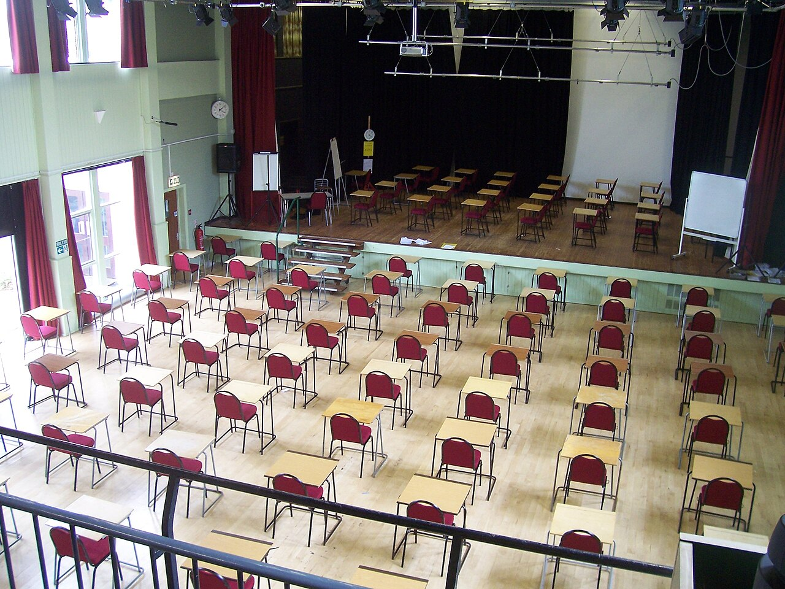

Imtihon oldidan hayajon: dushman emas, yordamchi
Yurak tez uradi, qo'llar terlaydi — “men qo'rqyapman” deymiz. Tadqiqotlar bu tuyg'uga boshqacha qarash natijani yaxshilashi mumkinligini ko'rsatdi.

Imtihon oldidan yurak urishi tezlashadi, nafas tezlashadi — tana “jangga” tayyorlanadi. Ko'pchilik buni yomon belgi deb o'ylaydi va tinchlanishga harakat qiladi. Lekin bu reaksiya aslida tanani energiya bilan ta'minlash uchun yaratilgan.
GRE tajribasi
2010-yilda Jeremi Jeymison va hamkasblari (Garvard universiteti) GRE imtihoniga tayyorlanayotgan talabalar bilan tajriba o'tkazdi. Ishtirokchilar tasodifiy ikki guruhga bo'lindi. Bir guruhga qisqa ma'lumot berildi: imtihon oldidagi hayajon natijaga zarar emas, aksincha yordam berishi mumkin. Ikkinchi guruhga bunday ma'lumot berilmadi.
Natija: “hayajon foydali” degan ma'lumot olgan guruh laboratoriyadagi GRE matematika bo'limida yaxshiroq natija ko'rsatdi. Eng qizig'i — 1–3 oydan keyin topshirilgan haqiqiy GRE imtihonida ham bu guruhning matematika bali yuqoriroq chiqdi.

“Men qo'rqyapman” emas — “tanam tayyorlanyapti”.
Keyingi tadqiqotlar
2022-yilda Jeymison va hamkasblari shunga o'xshash g'oyani kollej talabalari bilan sinashdi: imtihon oldidan stressning foydasi haqida o'qigan talabalar matematika xavotirini kamroq his qilgan va yuqoriroq ball olgan. Bu usul “qayta baholash” (reappraisal) deb ataladi.
Imtihon kuni
- Hayajonni nomlang. “Bu energiya, u menga diqqat beradi.”
- Tinchlanishga majburlamang. Hayajonni bosish ham kuch talab qiladi.
- Chuqur nafas oling. 4 soniya nafas, 6 soniya chiqarish — tanani boshqarish.
- Tayyorgarlik — eng yaxshi dori. Mashq testlari hayajonni tanish qiladi.
Manba: Jamieson, Mendes, Blackstock & Schmader, “Turning the knots in your stomach into bows”, Journal of Experimental Social Psychology, 2010; Jamieson va boshq., 2022. Matn — o'zbek tilidagi erkin qisqacha bayon.